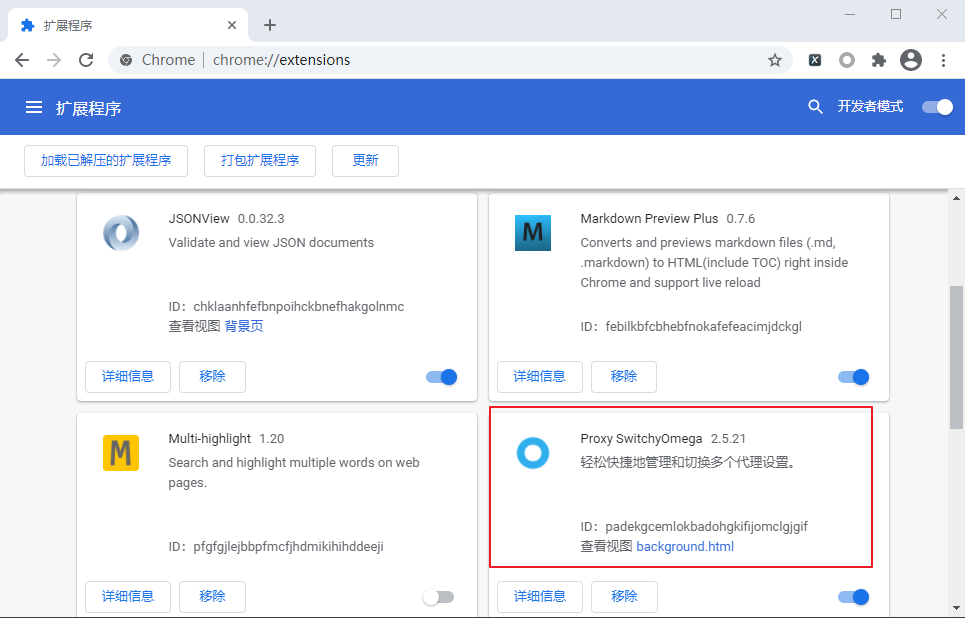
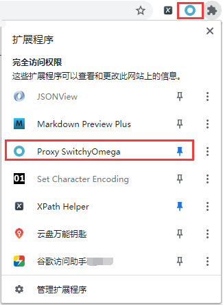
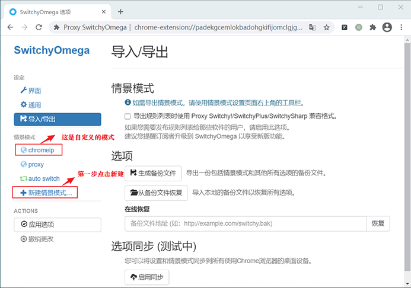
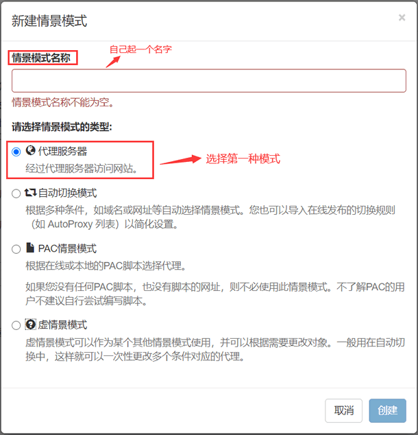
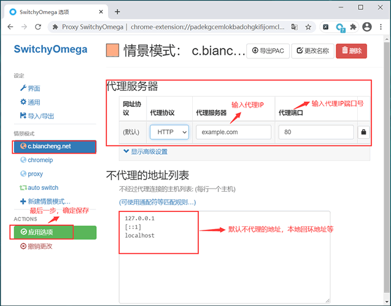
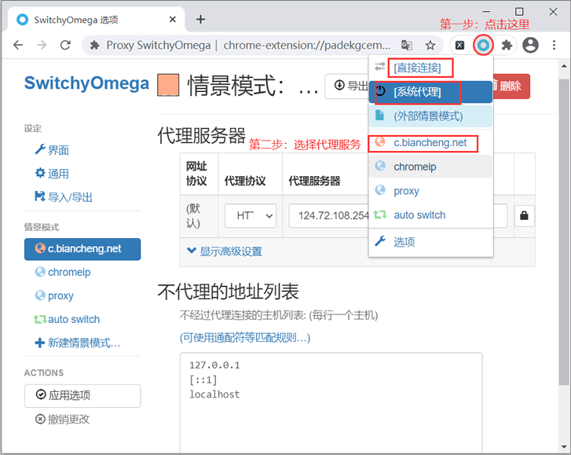
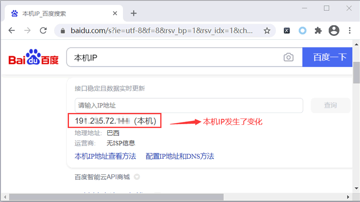

Proxy SwitchyOmega安装和使用
Proxy SwitchyOmega 是一款非常优秀的浏览器插件，适用于 Chrome 和 Firefox，它可以轻松快捷地管理和切换 IP 代理。
安装完成后，将管理工具固定在浏览器地址栏的右侧，以方便后续使用。如下图所示：
 图2：固定扩展程序
图2：固定扩展程序
按照图 3 进行相关操作，输入自定义的情景模式名称，并选择“代理服务器”类型，最后点击“创建”按钮。
配置完成后切记要点击“应用选项”，否则配置不能生效。
上图所示，“直接连接”是不使用任何代理，直接访问网页；“系统代理”则是使用当前计算机的 Internet 代理设置，而 "auto switch" 是根据自定义的列表规则，自动切换 IP 访问网站，从而避免手动切换代理 IP 的麻烦。
此时本机的真实 IP 已经隐藏起来，当我们通过谷歌浏览器访问任何网站时，都不会留下真实的 IP 信息。如果想取消代理服务，可以直接点击“系统代理”或者“直接连接”，两者任选其一即可实现取消，当然您也可直接关闭拓展程序。
下载安装插件
Proxy SwitchyOmega 下载安装非常简单，除了通过 Chrome 应用商店安装之外，还可以直接访问官方网站下载相应的版本，网址为：https://proxy-switchyomega.com/download/，下载完成后，插件会被自动安装到浏览器扩展程序中，如下所示：

图1：Proxy SwitchyOmega
图1：Proxy SwitchyOmega
安装完成后，将管理工具固定在浏览器地址栏的右侧，以方便后续使用。如下图所示：

图2：固定扩展程序简单使用说明
下面对该扩展程序做简单的使用说明。点击右上角刚刚安装的扩展程序，在弹出的会话框中点击“选项”，进入 SwitchyOmega 主界面， 如下所示：

图3：SwitchyOmega 界面
1) 新建情景模式
SwitchyOmega 自带 proxy（代理模式） 与 auto switch（自动切换模式），除此之外，你也可以自定义情景模式。如上图 2 所示，点击“新建情景模式” 会弹出如下会话框：

图4：新建情景模式
图4：新建情景模式
按照图 3 进行相关操作，输入自定义的情景模式名称，并选择“代理服务器”类型，最后点击“创建”按钮。
2) 配置代理服务器
创建完成后，在弹出的会话框内完成代理服务器参数配置，如下图所示：

图5：代理服务器配置
图5：代理服务器配置
配置完成后切记要点击“应用选项”，否则配置不能生效。
注意：在配置代理服务前，您应该拥有一个代理 IP，否则不能配置成功。SwitchyOmega 插件只帮助管理代理 IP，不提供代理 IP 服务器。
3) 应用代理服务器
最后一步：启动配置好的代理服务器，其流程如下图所示：

图5：启用代理服务器
图5：启用代理服务器
上图所示，“直接连接”是不使用任何代理，直接访问网页；“系统代理”则是使用当前计算机的 Internet 代理设置，而 "auto switch" 是根据自定义的列表规则，自动切换 IP 访问网站，从而避免手动切换代理 IP 的麻烦。
4) 验证代理 IP
按照上述步骤配置完成后，您就可以使用代理服务器去访问网站了。接下来，通过查询本机 IP 验证是否正在使用代理 IP，如下所示：

图 6：查询本机IP
图 6：查询本机IP
此时本机的真实 IP 已经隐藏起来，当我们通过谷歌浏览器访问任何网站时，都不会留下真实的 IP 信息。如果想取消代理服务，可以直接点击“系统代理”或者“直接连接”，两者任选其一即可实现取消，当然您也可直接关闭拓展程序。
关注公众号「站长严长生」，在手机上阅读所有教程，随时随地都能学习。内含一款搜索神器，免费下载全网书籍和视频。

微信扫码关注公众号